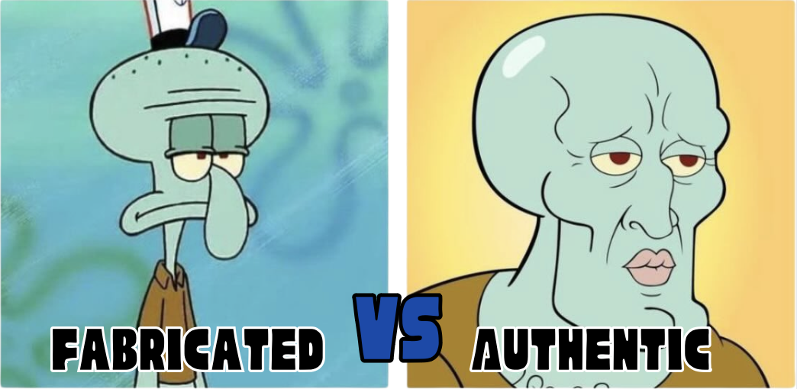

Identifying the Risks of Gen AI
Although Gen AI offers numerous benefits, it also presents several risks
and challenges that we need to be aware of to avoid.

Data Privacy
Concerns
Uploading private documents or information on Gen AI platform poses a threat to your privacy.
Unintentional
Harm
Gen AI models can produce errors which may lead to misinformation and user harm from inaccurate advice.
Copyright
Issues
AI might produce content that copies another's work, possibly causing legal issues for the user.

Spreading Misinformation
Gen AI can generate content that seems authentic, but is actually fabricated.